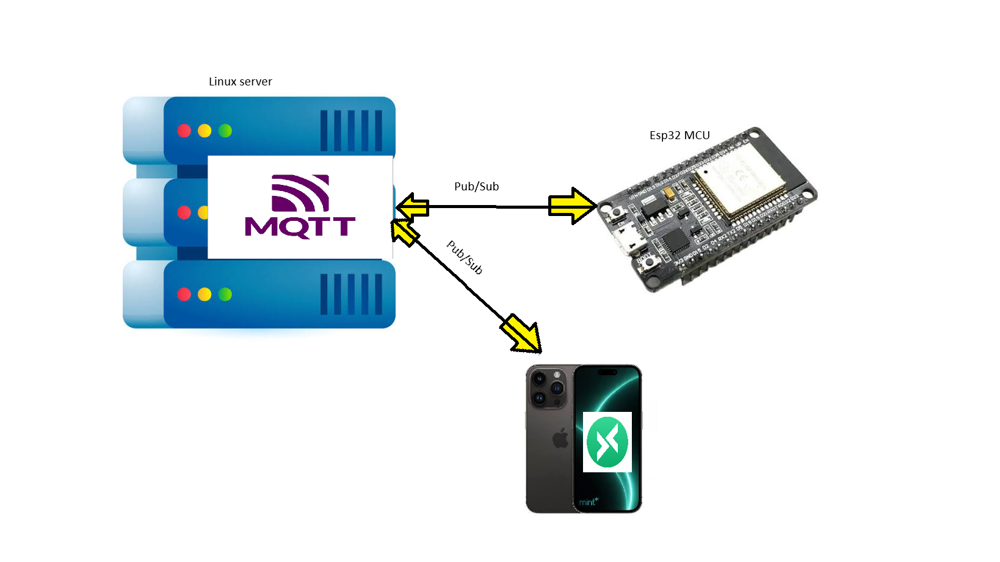
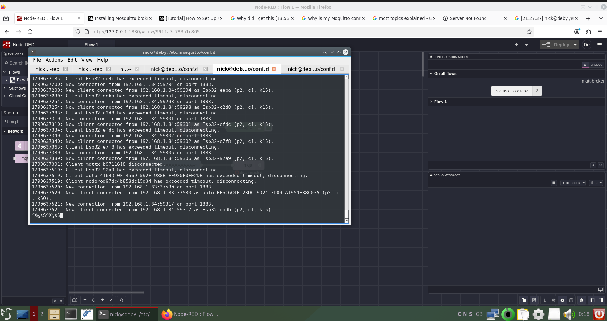
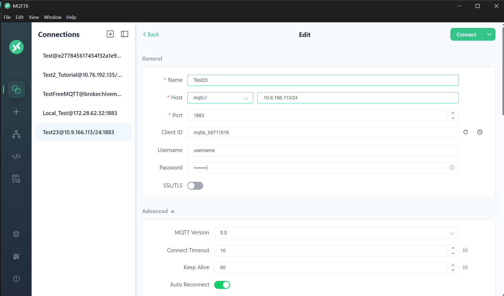
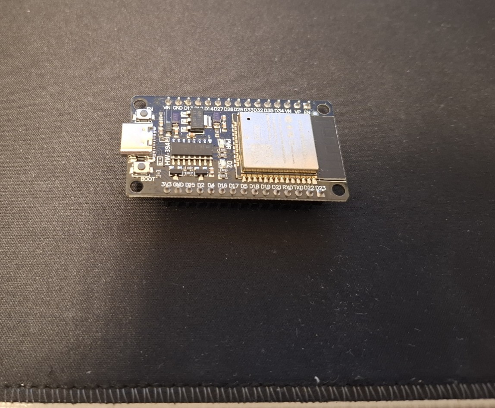
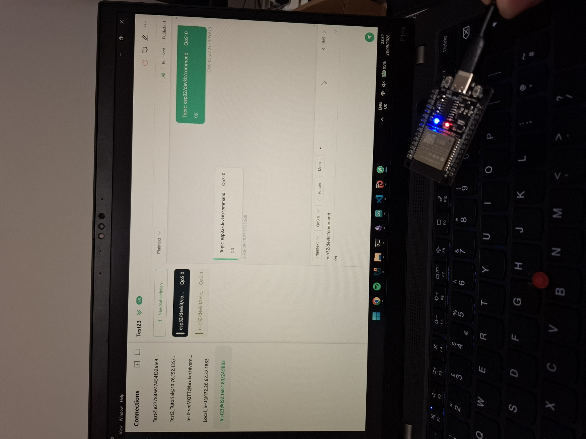

What is MQTT?
MQTT stands for Message Queuing Telemetry Transport. It is a lightweight publish and subscribe messaging protocol that is often used in IoT systems. It is useful when small devices need to send simple messages without using a large amount of data.
This runs at the application layer and uses TCP/IP under the hood. MQTT is lightweight because the packet header can be very small, at 2 bytes. This allows mcu devices to use less power and bandwidth.
At a high level, MQTT uses three main roles: broker, publisher, and subscriber. The broker is the middle server that receives messages and sorts them by topic. A publisher sends data to a topic. A subscriber listens to a topic and receives messages from the broker.
I think of it like subscribing to a YouTube channel. The publisher posts something, the broker organises it under a topic, and the subscriber receives updates for the topic it subscribed to. The official MQTT website is useful if you want to learn more: mqtt.org.
For a more in-depth overview, I also found Shawn Hymel's MQTT explanation useful: MQTT Explained.
What I wanted to build
I wanted to test MQTT with an ESP32 microcontroller. The goal was simple: publish a status message from the ESP32 and send commands back to turn the onboard LED on and off.

This was useful because it gave me a basic end-to-end test. The Linux server acted as the MQTT broker, MQTTX acted as my test client, and the ESP32 acted as the embedded device.
Requirements
- A Linux machine, such as Ubuntu Server, Debian, WSL, a VM, or a Raspberry Pi.
- An ESP32 DevKit or similar microcontroller.
- MQTTX on a laptop, or another MQTT client app.
- A local network where the ESP32 and broker can reach each other.
Step 1: Install Mosquitto
I used Mosquitto as the MQTT broker. Mosquitto is the server that receives messages from publishers and forwards them to subscribers.
sudo apt update
sudo apt install mosquitto mosquitto-clients -yThen I started Mosquitto and enabled it to start when the server boots.
sudo systemctl start mosquitto
sudo systemctl enable mosquitto
sudo systemctl status mosquittoStep 2: Test MQTT locally
Before using the ESP32, I tested publish and subscribe locally. I opened two terminals. In the first terminal, I subscribed to a test topic.
mosquitto_sub -h localhost -t "test_topic" -vIn the second terminal, I published a message to that topic.
mosquitto_pub -h localhost -t "test_topic" -m "Testing"If everything is working, the subscriber terminal should print the message.
If the connection is rejected, it is usually because Mosquitto 2.x starts in a more locked-down local-only mode unless a listener and access rule are configured. I fixed this by creating my own test config file.
Step 3: Create a test Mosquitto config
I created my own config file inside the Mosquitto configuration folder. Keeping my test setup in conf.d means I do not have to heavily edit the main mosquitto.conf file.
sudo nano /etc/mosquitto/conf.d/test.confFor a first local test, I used anonymous access. This is easy for testing on a private local network, but I would not expose this to the public internet.
listener 1883 0.0.0.0
protocol mqtt
allow_anonymous trueThe 0.0.0.0 part means the broker listens on all network interfaces. When left blank it defaults to 0.0.0.0 . You can also replace it with the server's own LAN IP address.
Then I launched Mosquitto with my custom config file.
sudo mosquitto -c /etc/mosquitto/conf.d/test.confIf port 1883 is already in use, the normal Mosquitto service may already be running. Stop it first, then launch your test config again.
sudo systemctl stop mosquitto
sudo mosquitto -c /etc/mosquitto/conf.d/test.confThe terminal output shuld look something like this:

Step 4: Add username and password authentication
After the basic test, I added username and password authentication. This makes the broker less open because clients need login details before they can publish or subscribe.
sudo mosquitto_passwd -c /etc/mosquitto/passwd <your-username>The command asks you to type a password. If the password file already exists and you only want to update the password, leave out -c so you do not overwrite the whole file.
sudo mosquitto_passwd /etc/mosquitto/passwd <your-username>Then I changed the config to require authentication.
listener 1883 0.0.0.0
protocol mqtt
allow_anonymous false
password_file /etc/mosquitto/passwdAgain, 0.0.0.0 means Mosquitto listens on the server's available network interfaces. If you want to bind to one address only, use the server's LAN IP address.
One error I hit was Mosquitto not being able to read the password file.
1790340320: mosquitto version 2.0.21 starting
1790340358: Config loaded from /etc/mosquitto/conf.d/test.conf.
1790340358: Error: Unable to open pwfile "/etc/mosquitto/passwd".
1790340358: Error opening password file "/etc/mosquitto/passwd".The reason was that the password file was created with sudo, so Mosquitto did not have the right ownership/permissions to read it when running as the Mosquitto service user.
sudo chown mosquitto:mosquitto /etc/mosquitto/passwd
sudo chmod 0600 /etc/mosquitto/passwdThe 0600 permission means the owner can read and write the file, but the group and other users get no access. After fixing the file permissions, I cleared the error state and restarted Mosquitto.
sudo systemctl reset-failed mosquitto.service
sudo systemctl restart mosquitto.service
sudo systemctl status mosquitto.serviceThen I tested username/password authentication from the terminal.
mosquitto_sub -h localhost -t test -u "<your-username>" -P "<your-password>" -v
mosquitto_pub -h localhost -t test -u "<your-username>" -P "<your-password>" -m "Hello"You can also test from another machine by replacing localhost with the broker/server IP address.
mosquitto_sub -h <broker-ip-address> -t test -u "<your-username>" -P "<your-password>" -v
mosquitto_pub -h <broker-ip-address> -t test -u "<your-username>" -P "<your-password>" -m "Hello"Step 5: Find the broker IP address
The ESP32 and MQTTX need to know the IP address of the server running Mosquitto. I used these commands to find it.
hostname -I
ip -4 addrThe value I needed was the IPv4 address of the server on my local network. The ESP32, laptop, and broker need to be on the same network, or at least be able to route to each other. For a simple home test, keeping all devices on the same Wi-Fi/LAN is easiest.
If using a VM, NAT mode can block inbound connections from other devices. Bridged Adapter mode is easier for this test because the VM appears as another device on the same local network.
Step 6: Test with MQTTX
I used MQTTX as a visual MQTT client. It let me connect to the broker, subscribe to topics, and publish messages without typing every command manually. The official MQTTX download page is here: mqttx.app/downloads.
In MQTTX, I created a new connection using the broker/server IP address and port 1883. Because I enabled authentication, I also had to enter the MQTT username and password that I created with mosquitto_passwd.
Then I subscribed to the telemetry topic and published commands to the command topic.
esp32/devkit/telemetry
esp32/devkit/command
Step 7: ESP32 MQTT LED code

This is the ESP32 sketch I used with authentication. The ESP32 connects to Wi-Fi, connects to the MQTT broker using the username and password, publishes a message every two seconds, and listens for LED commands.
The broker IP address in mqtt_server must be the IP address of the machine running Mosquitto. Do not use localhost on the ESP32, because that would point back to the ESP32 itself! Think about it.
Sending ON to esp32/devkit/command turns the LED on. Sending OFF turns it off.
// Simple MQTT and LED on/off on an ESP32 DevKit
#include <WiFi.h>
#include <PubSubClient.h>
// Onboard LED
#define LED_PIN 2
// Networking parameters
const char* ssid = "<your-wifi-name>";
const char* password = "<your-wifi-password>";
// Use the IP address of the server running Mosquitto.
// Do not use localhost here because localhost would mean the ESP32 itself.
const char* mqtt_server = "<broker-ip-address>";
// MQTT authentication details from Mosquitto
const char* mqtt_username = "<your-username>";
const char* mqtt_password = "<your-password>";
// MQTT topics
const char* command_topic = "esp32/devkit/command";
const char* telemetry_topic = "esp32/devkit/telemetry";
// Create Wi-Fi and MQTT objects
WiFiClient espClient;
PubSubClient client(espClient);
// Message buffer
#define MSG_BUFFER_SIZE (50)
char msg[MSG_BUFFER_SIZE];
// Timings
unsigned long lastMsg = 0;
int value = 0;
// Wi-Fi setup
void setup_wifi() {
delay(10);
Serial.println();
Serial.print("Connecting to ");
Serial.println(ssid);
WiFi.mode(WIFI_STA);
WiFi.begin(ssid, password);
while (WiFi.status() != WL_CONNECTED) {
delay(500);
Serial.print(".");
}
randomSeed(micros()); // Used later for the random MQTT client ID
Serial.println("");
Serial.println("WiFi connected");
Serial.print("IP address: ");
Serial.println(WiFi.localIP());
Serial.print("MAC Address: ");
Serial.println(WiFi.macAddress());
}
// This function runs when a message arrives on a subscribed MQTT topic
void callback(char* topic, byte* payload, unsigned int length) {
Serial.print("Message arrived [");
Serial.print(topic);
Serial.print("] ");
// Print incoming payload message to Serial Monitor
for (int i = 0; i < length; i++) {
Serial.print((char)payload[i]);
}
Serial.println();
// Command handlers
if (strcmp(topic, command_topic) == 0) {
if (length == 2 &&
payload[0] == 'O' &&
payload[1] == 'N') {
digitalWrite(LED_PIN, HIGH);
Serial.println("LED turned ON");
}
else if (length == 3 &&
payload[0] == 'O' &&
payload[1] == 'F' &&
payload[2] == 'F') {
digitalWrite(LED_PIN, LOW);
Serial.println("LED turned OFF");
}
}
}
void reconnect() {
// Loop until we are reconnected
while (!client.connected()) {
Serial.print("Attempting MQTT connection...");
// Create a unique, random client ID
String clientId = "Esp32-";
clientId += String(random(0xffff), HEX);
// Attempt to connect with username/password
if (client.connect(clientId.c_str(), mqtt_username, mqtt_password)) {
Serial.println("connected");
// Once connected, publish an announcement
client.publish(telemetry_topic, "hello world from ESP32!");
// Subscribe to the command topic
client.subscribe(command_topic);
} else {
Serial.print("failed, rc=");
Serial.print(client.state());
Serial.println(" trying again in 5 seconds");
delay(5000);
}
}
}
void setup() {
pinMode(LED_PIN, OUTPUT);
digitalWrite(LED_PIN, LOW);
Serial.begin(115200);
setup_wifi();
// Connect to the broker on the standard MQTT port
client.setServer(mqtt_server, 1883);
client.setCallback(callback);
}
void loop() {
if (!client.connected()) {
reconnect();
}
client.loop();
// Publish a payload message roughly every 2 seconds
unsigned long now = millis();
if (now - lastMsg > 2000) {
lastMsg = now;
++value;
snprintf(msg, MSG_BUFFER_SIZE, "I am alive! #%d", value);
Serial.print("Publish message: ");
Serial.println(msg);
client.publish(telemetry_topic, msg);
}
}Step 8: Send LED commands
After flashing the ESP32, I could send commands from MQTTX by using the command topic. I could also test the same thing from the terminal using Mosquitto clients.
mosquitto_sub -h <broker-ip-address> -t "esp32/devkit/telemetry" -u "<your-username>" -P "<your-password>" -vmosquitto_pub -h <broker-ip-address> -t "esp32/devkit/command" -u "<your-username>" -P "<your-password>" -m "ON"
mosquitto_pub -h <broker-ip-address> -t "esp32/devkit/command" -u "<your-username>" -P "<your-password>" -m "OFF"
What I learned
The main thing I learned was that MQTT separates devices from each other. The ESP32 does not need to know every device that wants the data. It only publishes to a topic. Anything interested in that topic can subscribe through the broker.
I also learned more about Mosquitto configuration and Linux permissions. The password file problem was useful because it showed me that services often run as their own user, so file ownership and permissions matter.
This was a simple test, but it gave me a working base for future IoT projects. The next step would be to improve the security setup further and build a more complete sensor/control system.